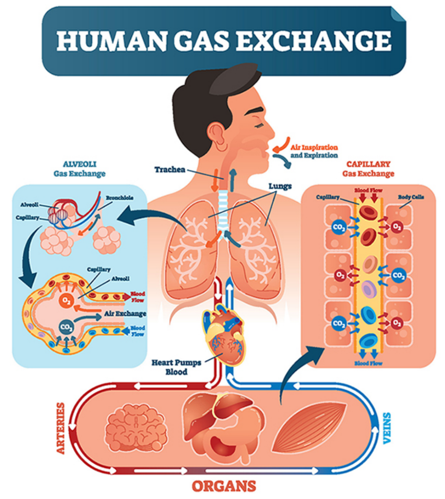
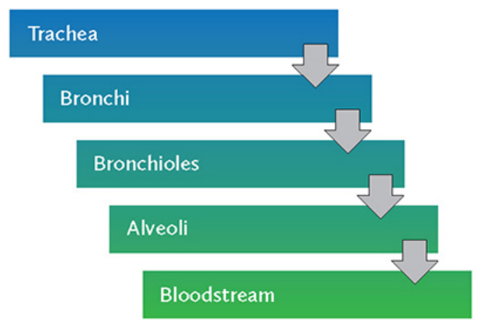
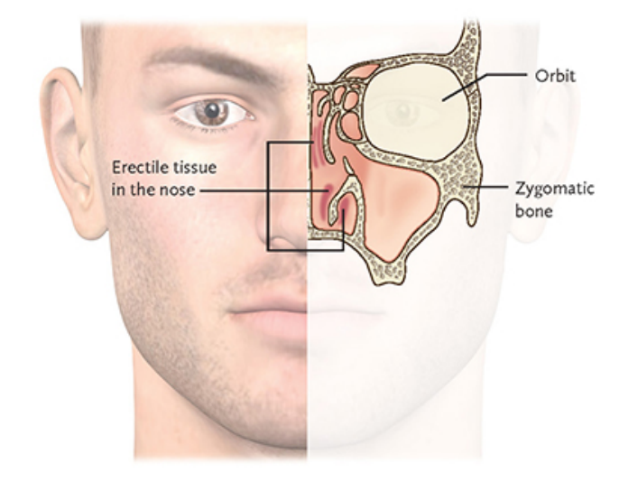
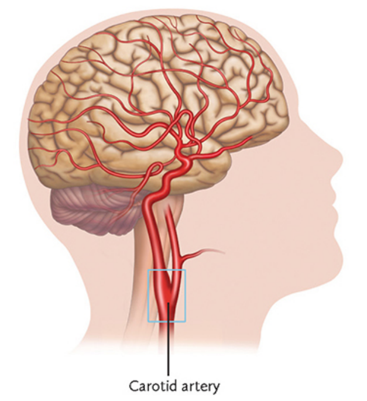
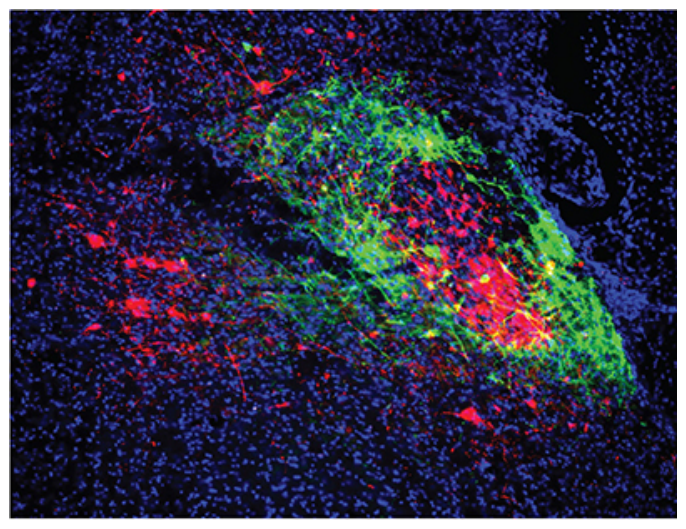

Chương 6 — Sinh lý học thần kinh của hơi thở
CHƯƠNG 6
Sinh lý thần kinh của hơi thở
Hít thở là một hoạt động duy trì sự sống cho mọi loài động vật trên Trái Đất, và là một khía cạnh thiết yếu của các phương pháp thực hành chiêm nghiệm như yoga hay thiền định. Ngày nay, các nhà khoa học vẫn đang tiếp tục khám phá cách hơi thở có thể tác động đến nhịp tim, hệ tiêu hóa, hệ miễn dịch và thậm chí cả não bộ.
SINH LÝ HỌC CỦA QUÁ TRÌNH HÍT VÀO VÀ THỞ RA
Nhịp hít vào có thể cung cấp oxy cho cơ bắp, làm chậm nhịp tim, ổn định huyết áp và giảm căng thẳng. Việc hít vào không khí — vốn chứa khoảng 80% nitơ và 20% oxy — sẽ khởi phát một chuỗi các phản ứng tác động đến mọi hệ cơ quan trong cơ thể.
Trong quá trình hít vào, không khí đi từ miệng hoặc mũi xuống hầu, thường được gọi là cổ họng. Sau đó, không khí chảy vào khí quản, còn gọi là ống dẫn khí (Hình 6.1). Khí quản được chia thành hai đường dẫn khí tương đối lớn gọi là phế quản phải và phế quản trái, nối tương ứng với phổi phải và phổi trái. Phổi phải có ba phần (gọi là thùy) và hơi lớn hơn phổi trái, vốn chỉ có hai thùy. Các phế quản sau đó tiếp tục phân chia thành những tiểu phế quản nhỏ hơn nữa bên trong phổi, giống như thân cây phân nhánh hết lần này đến lần khác. Các tiểu phế quản kết thúc ở những túi khí nhỏ li ti gọi là phế nang, nơi chuyển oxy từ không khí hít vào vào máu (Hình 6.2). Máu giàu oxy sau đó được bơm đi khắp cơ thể để cung cấp oxy cho các tế bào.

Hình 6.1 Giải phẫu của hơi thở.
Khi tế bào sử dụng oxy, nó tạo ra carbon dioxide như một chất thải. Carbon dioxide được vận chuyển trong máu trở về phổi để có thể được loại bỏ trong quá trình thở ra.

Hình 6.2 Dòng chảy giải phẫu của hơi thở.
TẦM QUAN TRỌNG CỦA MŨI
Cụm từ “hít vào bằng mũi và thở ra bằng miệng” thường được sử dụng trong các lớp học yoga và thiền định, mặc dù cơ sở khoa học đằng sau lời hướng dẫn này thường bị bỏ qua. Con người được thiết kế để thở bằng mũi. Trẻ sơ sinh hít vào bằng mũi để có thể vừa bú vừa thở cùng lúc, và các vận động viên hít vào bằng mũi để làm chậm nhịp tim và cải thiện thành tích thể thao.
Mũi kiểm soát nhiệt độ của không khí hít vào bằng cách làm ấm nó trong suốt nhịp thở. Phổi rất nhạy cảm với nhiệt độ lạnh, điều này khiến chúng co lại và thở nông hơn. Ví dụ, khi chạy bộ ngoài trời vào một ngày se lạnh, bạn có thể cảm thấy khó hít thở sâu. Để bù đắp cho phản ứng này, mũi làm ấm không khí trước khi nó đi vào phổi, nhờ đó phổi có thể giãn nở đúng cách để tiếp nhận oxy.
Mũi cũng điều hòa độ ẩm của không khí đi vào phổi. Việc thở bằng mũi bổ sung độ ẩm cho không khí nhằm ngăn ngừa đau họng và khô miệng. Vào những tháng mùa đông, những người thở bằng miệng có thể bị đau họng vì không khí không được mũi làm ẩm. Bên trong mũi còn có những sợi lông nhỏ li ti gọi là lông chuyển giúp giữ lại bụi bẩn và độc tố để ngăn chúng xâm nhập vào phổi.
Cuối cùng, mũi truyền tải khứu giác thông qua dây thần kinh khứu giác. Khả năng ngửi giúp phát hiện các độc tố có hại, chẳng hạn như khói từ một tòa nhà đang cháy. Trong một buổi tập yoga hoặc thiền định, người hướng dẫn có thể đốt nhang hoặc xịt tinh dầu, điều này giúp nâng tầm buổi tập bằng cách bổ sung thêm chiều kích của mùi hương.
Chiếc mũi tinh tường Mũi chứa đầy mô cương; cùng loại mô có ở bộ phận sinh dục (Hình 6.3). Mô cương trong mũi đóng một vai trò điều hòa quan trọng. Bằng cách giãn nở và co lại, mô cương có thể làm thay đổi đường kính của lỗ mũi, từ đó thay đổi tốc độ và lưu lượng dòng khí đi vào cơ thể (Ng, Ramsey và Corey, 1999). Đổi lại, điều này giúp điều hòa quá trình làm ấm và làm ẩm không khí.

Hình 6.3 Mô cương trong mũi.
Phỏng theo: https://www.researchgate.net/figure/The-location-of-the-erectile-tissue-inside-the nasal-cavity_fig10_229079961, CC BY 2.5.
Mô cương trong mũi sưng phồng rồi xẹp xuống suốt cả ngày theo một chu kỳ nhất định (Kahana-Zweig et al., 2016). Điều này cho phép luồng khí đi qua mạnh hơn ở từng bên lỗ mũi tại một thời điểm, luân phiên từ trái sang phải rồi quay trở lại. Một văn bản yoga cổ có tên là Shiva Swarodaya mô tả dòng chảy của hiện tượng chu kỳ mũi này dưới dạng năng lượng (Telles và Naveen, 2008; Rai, 2012). Trong văn bản này, hơi thở được coi là sinh lực vũ trụ, và những người thực hành Swara yoga tập trung vào các kiểu thở khác nhau. Có ba kiểu thở chính trong Swara yoga bao gồm thở qua: 1) lỗ mũi trái, 2) lỗ mũi phải và 3) cả hai lỗ mũi. Mỗi kiểu thở gắn liền với chu kỳ của mặt trăng, khi hai lỗ mũi tự nhiên luân phiên tạo nên nhịp điệu riêng của chúng (Saraswati, 1982). Chưa có nghiên cứu khoa học nào về riêng Swara yoga, nhưng các nhà khoa học biết rằng hai lỗ mũi thực sự co giãn luân phiên suốt cả ngày. Chu kỳ mũi đã được ghi nhận bằng chụp cộng hưởng từ (MRI) cấu trúc (Kahana-Zweig et al., 2016). Một bên lỗ mũi có thể sưng lên trong khoảng từ 25 phút đến vài giờ rồi thư giãn khi bên lỗ mũi đối diện bắt đầu sưng lên. Kết quả là tình trạng nghẹt và thông thoáng một phần diễn ra luân phiên một cách vô thức suốt cả ngày.
Những chu kỳ mũi này có khả năng được điều khiển bởi hệ thần kinh tự chủ. Trong khi hệ thần kinh giao cảm gắn liền với việc làm co các mạch máu ở một bên lỗ mũi, thì hệ thần kinh phó giao cảm làm giãn các mạch máu ở bên lỗ mũi còn lại. Thở chậm hơn có thể tạo ra chu kỳ mạnh mẽ hơn giữa hai lỗ mũi, với mỗi bên có sự sưng phồng và giải phóng áp lực rõ rệt hơn (Kahana-Zweig et al., 2016).
Chu kỳ mũi cũng có liên quan đến sức khỏe và bệnh tật. Chẳng hạn, khi bị bệnh hoặc căng thẳng, mũi sẽ bị viêm. Những trạng thái này có thể khiến chu kỳ mũi tăng tốc, chuyển đổi từ trái sang phải nhanh hơn để kiểm soát tốt hơn các yếu tố như nhiệt độ cũng như các hóa chất có thể ảnh hưởng đến não bộ (Nestor, 2021). Một nghiên cứu trường hợp về một phụ nữ mắc bệnh tâm thần phân liệt cũng cho thấy sự mất cân bằng giữa việc thở qua lỗ mũi trái và phải của cô ấy (Shannahoff-Khalsa và Golshan, 2015). Khi các nhà khoa học áp dụng các bài tập để điều chỉnh sự mất cân bằng này, các ảo giác của cô đã giảm bớt. Do đó, có thể tồn tại mối liên hệ giữa chu kỳ mũi và một số trạng thái bệnh lý.
Tuy nhiên, cỡ mẫu chỉ gồm một người đã giới hạn những kết luận có thể rút ra và cần phải thực hiện thêm nhiều nghiên cứu nữa.
Những điểm chính cần nhớ
Thở bằng mũi rất quan trọng trong yoga và thiền định để làm chậm nhịp tim và tăng cường lượng oxy. Mũi kiểm soát nhiệt độ cũng như độ ẩm của không khí hít vào. Mũi cũng chứa mô cương giãn nở và co lại suốt cả ngày để điều hòa dòng chảy của hơi thở một cách tự nhiên.
HƠI THỞ VÀ NÃO BỘ
Trung bình một người hít thở 25.000 lần mỗi ngày (Gross, 2020). Quá trình thở diễn ra một cách vô thức hoặc có ý thức tùy thuộc vào mức độ chú ý đến hơi thở. Phần lớn thời gian, việc thở không phải là một nỗ lực có ý thức. Cơ thể tự nhiên hít vào và thở ra không khí. Nhưng cơ thể điều hòa hoạt động này bằng cách nào?
Tất cả đều nhờ vào bộ máy tinh vi trong các mạch máu và một trung tâm hô hấp nhỏ xíu ở thân não. Cơ thể cảm nhận nồng độ oxy, carbon dioxide và độ pH bằng cách sử dụng các cảm biến chuyên biệt nằm trong động mạch cảnh ở cổ và cung động mạch chủ của tim, được gọi là thụ thể hóa học (chemoreceptors) (Prabhakar, 2000) (Hình 6.4).
Khi nồng độ carbon dioxide trong máu tăng lên quá cao, các thụ thể hóa học gửi tín hiệu đến một phần của thân não gọi là hành não (medulla) để báo rằng cơ thể cần thêm oxy. Hành não chỉ thị cho các cơ hô hấp — những cơ bao quanh lồng ngực và cơ hoành — co lại và giãn ra để đưa không khí tươi mới vào phổi. Những cơ này cho phép thực hiện nhịp hít vào (inspiration) cũng như nhịp thở ra (expiration). Hành não cũng duy trì nhịp điệu hô hấp để thở ở một tốc độ đều đặn (Ikeda et al., 2016). Nếu cơ thể không nhận đủ oxy, các thụ thể hóa học sẽ gửi tín hiệu đến hành não để bảo phổi thở thường xuyên hơn.
Khi nồng độ oxy trong cơ thể xuống thấp, hành não cũng có thể gửi tín hiệu đến tim, chỉ thị tim bơm nhanh hơn để tuần hoàn máu giàu oxy. Sự giao tiếp giữa hành não, phổi và tim chủ yếu diễn ra thông qua dây thần kinh phế vị, dây thần kinh chính của hệ thần kinh phó giao cảm.
Các nhà khoa học tin rằng hơi thở có thể kích thích dây thần kinh phế vị thông qua cơ chế kích thích dây thần kinh phế vị qua hô hấp (Gerritsen và Band, 2018). Hệ thần kinh tự chủ dựa vào sự cân bằng giữa hệ thần kinh giao cảm và hệ thần kinh phó giao cảm. Trong khi hệ thần kinh giao cảm có thể làm tăng nhịp tim, huyết áp và nhịp thở, thì hệ thần kinh phó giao cảm có thể làm giảm các yếu tố này và tăng cường tiêu hóa. Cụ thể, dây thần kinh phế vị có thể bị ức chế trong khi hít vào và được kích hoạt trong khi thở ra cũng như khi làm chậm nhịp thở (Chang et al., 2015; Gerritsen và Band, 2018). Vì vậy, việc hít thở sâu chậm rãi và có kiểm soát sẽ làm tràn ngập oxy cho cơ thể và phát tín hiệu cho não bộ rằng đã đến lúc thư giãn.

Hình 6.4 Động mạch cảnh chứa các thụ thể hóa học có thể cảm nhận nồng độ oxy trong máu. Mỗi bên cổ có một động mạch cảnh đưa máu lên cổ và đầu. Nếu bạn đặt hai ngón tay lên một bên cổ, bạn có thể cảm nhận được nhịp đập của máu từ tim đang chảy qua các động mạch cảnh.
Những điểm chính cần nhớ
Các thụ thể hóa học trong động mạch cảnh gửi tín hiệu đến hành não ở thân não về nồng độ oxy trong máu. Nếu cơ thể không nhận đủ oxy, hành não sẽ gửi tín hiệu đến phổi để thở thường xuyên hơn. Sự giao tiếp giữa hành não, phổi và tim chủ yếu thông qua dây thần kinh phế vị, dây thần kinh chính của hệ thần kinh phó giao cảm. Thở sâu chậm rãi, có kiểm soát giúp nạp đầy oxy cho cơ thể và thúc đẩy sự thư giãn.
Hơi thở và tâm trạng Hơi thở có thể là một công cụ mạnh mẽ để thay đổi tâm trạng. Ví dụ, những hơi thở dài và sâu mang lại cảm giác bình tĩnh và thư giãn, trong khi hơi thở mạnh mẽ hơn có thể tiếp thêm năng lượng cho cơ thể. Hàng thế kỷ nay, con người đã sử dụng việc thở chậm, có kiểm soát để thúc đẩy trạng thái tâm trí bình tĩnh và giảm sự kích thích quá mức trong những lúc căng thẳng, chẳng hạn như trong một cơn hoảng loạn. Tuy nhiên, cho đến gần đây, các nhà nghiên cứu vẫn chưa biết hơi thở tác động đến trạng thái tâm trí như thế nào.
Các nhà nghiên cứu tại Đại học Stanford đã tình cờ phát hiện ra mối liên hệ giữa hơi thở và tâm trí khi đang kiểm tra các tế bào thần kinh trong thân não của chuột (Yackle et al., 2017). Các nhà khoa học quan tâm đến một nhóm tế bào thần kinh ở hành não kiểm soát nhịp điệu hô hấp gọi là phức hợp pre-Bötzinger, và họ muốn biết thêm về vai trò cụ thể của các tế bào thần kinh trong vùng này. Để tìm hiểu thêm, các nhà khoa học đã phá hủy một tiểu quần thể tế bào thần kinh và quan sát xem có bất kỳ thay đổi nào trong hành vi của chuột hay không.
Các nhà nghiên cứu phát hiện ra rằng những con chuột không có tiểu quần thể tế bào thần kinh phức hợp pre-Bötzinger này vẫn có thể thở với nhịp điệu bình thường, nhưng chúng lại bình tĩnh và thư giãn một cách bất thường. Các nhà khoa học đã vô cùng bối rối. Tại sao việc phá hủy các tế bào thần kinh hô hấp trong thân não lại khiến những con chuột trở nên bình tĩnh hơn?
Họ đã tình cờ tìm ra mắt xích liên kết giữa hơi thở, căng thẳng và cảm xúc. Tiểu quần thể tế bào thần kinh phức hợp pre-Bötzinger này gửi tín hiệu đến nhân lục (locus coeruleus), nơi sản xuất chất dẫn truyền thần kinh norepinephrine. Việc giải phóng norepinephrine thúc đẩy phản ứng căng thẳng, sự hưng phấn, nỗi sợ hãi và lo âu. Do đó, những tế bào thần kinh hô hấp này điều hòa sự cân bằng giữa các hành vi bình tĩnh và kích thích. Các kỹ thuật thở có khả năng hoạt động bằng cách làm thay đổi hoạt động của phức hợp pre-Bötzinger để điều chỉnh hoạt động của nhân lục, từ đó làm thay đổi tâm trạng.
Thở qua căng thẳng, đau đớn và lo âu Khi căng thẳng, nhịp thở tăng lên. Dưới tác động của căng thẳng tức thời, như chạy trốn khỏi một con sư tử, việc thở nhanh không phải là vấn đề. Tuy nhiên, những người bị căng thẳng mạn tính hoặc lo âu có xu hướng thở nông và dồn dập hơn trong một khoảng thời gian dài, liên tục kích hoạt hệ thần kinh giao cảm. Đổi lại, hệ thần kinh giao cảm giải phóng nhiều hormone căng thẳng hơn như cortisol, vốn có thể gây tổn thương tế bào.
Hơi thở có thể được tận dụng để mang lại lợi thế cho chúng ta. Bằng cách thực hành thở chậm, có kiểm soát, chúng ta có thể rèn luyện cơ thể kích hoạt hệ thần kinh phó giao cảm thay vì hệ thần kinh giao cảm.
Mẹo thở vượt qua căng thẳng Nếu bạn đang căng thẳng, một cách để điều chỉnh nhanh hệ thần kinh tự chủ là chỉ cần hít một hơi thật dài qua mũi. Hành động này gửi một tín hiệu trực tiếp đến não bộ rằng cơ thể bạn đang ở chế độ phục hồi – đã đến lúc thư giãn.
Các nhà khoa học từ Đại học Kỹ thuật Munich ở Đức cũng chỉ ra rằng việc chú tâm chánh niệm vào hơi thở có thể làm giảm căng thẳng và các cảm xúc tiêu cực (Doll et al., 2016). Trong nghiên cứu, 26 người tham gia được đào tạo về chú tâm chánh niệm vào hơi thở trong hai tuần. Sau đó, họ bước vào máy chụp MRI, nơi họ thực hành chú tâm vào hơi thở và được cho xem những hình ảnh gây căng thẳng, trong khi các nhà khoa học kiểm tra xem những vùng não nào của họ được kích hoạt. Các nhà nghiên cứu phát hiện ra rằng việc tập trung sự chú ý vào hơi thở đã kích hoạt vỏ não trước trán và làm giảm hoạt động ở hạch hạnh nhân (amygdala). Kiểu hoạt động não bộ này tạo ra những cảm xúc êm dịu.
Việc tập trung vào hơi thở giúp kéo tâm trí ra khỏi những nỗi lo âu. Chánh niệm rèn luyện não bộ tập trung vào khoảnh khắc hiện tại, thay vì để tâm trí trôi dạt vào trạng thái lo lắng và suy nghĩ miên man. Người thực hành có thể khai thác kiến thức này để làm dịu tâm trí bằng cách thực hành các bài tập thở và thiền định.
Hơi thở cũng liên kết với trải nghiệm đau đớn và lo âu. Nỗi đau tâm lý dữ dội có thể gây ra tình trạng tăng thông khí, một trạng thái khi hơi thở trở nên nhanh và nông. Các nhà khoa học từ Viện Nghiên cứu Sinh học Salk đã quan tâm đến việc khám phá xem nhóm tế bào thần kinh nào trong não chuột chịu trách nhiệm điều phối hơi thở với nỗi đau tâm lý, cùng với các cảm xúc tiêu cực như lo âu (Liu et al., 2021). Họ tập trung nghiên cứu vào một nhóm tế bào thần kinh gọi là nhóm hô hấp cầu não (PRG) nằm ở thân não. Các tế bào thần kinh PRG không tham gia vào việc tạo ra nhịp điệu hô hấp (đó là nhiệm vụ của nhóm hô hấp ở hành não), mà kiểm soát tốc độ và kiểu thở.
Bên trong PRG là một nhóm tế bào thần kinh nhỏ hơn gọi là nhân cạnh cánh tay (parabrachial nucleus). Việc kích hoạt nhân cạnh cánh tay đã được chứng minh là có thể vừa làm tăng vừa làm chậm nhịp thở. Các tác giả muốn xem liệu một tiểu quần thể tế bào thần kinh trong nhân cạnh cánh tay, gọi là các tế bào thần kinh biểu hiện Oprm1, có điều phối hơi thở với cơn đau và cảm xúc hay không, như thường thấy trong tình trạng tăng thông khí do đau. Sử dụng nhiều kỹ thuật khoa học khác nhau, các nhà khoa học đã lập bản đồ, theo dõi và thao túng mạch thần kinh ở chuột để xem nhịp thở bị ảnh hưởng như thế nào.
Họ phát hiện ra rằng mạch não điều hòa nhịp thở liên quan đến hai quần thể tế bào thần kinh biểu hiện Oprm1 đều nằm trong nhân cạnh cánh tay. Nhóm đầu tiên gọi là các tế bào thần kinh vỏ (shell neurons) kết nối với trung tâm hô hấp của não (phức hợp pre-Bötzinger), trong khi nhóm tế bào thần kinh thứ hai gọi là các tế bào thần kinh lõi (core neurons) kết nối với các trung tâm đau và cảm xúc (hạch hạnh nhân) (Hình 6.5). Khi cả hai quần thể tế bào thần kinh này được kích thích, những con chuột biểu hiện sự gia tăng nỗi đau tâm lý và các hành vi cảm xúc tiêu cực.

Hình 6.5 Các tế bào thần kinh vỏ (màu xanh lá) phóng chiếu đến trung tâm hô hấp và các tế bào thần kinh lõi (màu đỏ) phóng chiếu đến trung tâm đau/cảm xúc.
Nguồn: Hình ảnh do Viện Salk cung cấp. Từ: https://www.salk.edu/news-release/pain-and anxiety-impact-breathing-on-a-cellular-level
Trong một cuộc phỏng vấn với NPR, nhà khoa học trưởng Sung Han cho biết hai mạch thần kinh này liên kết chặt chẽ với nhau về mặt bản chất (Hamilton, 2021). “Nếu điều đó cũng đúng ở người, nó sẽ giúp giải thích mối liên hệ bí ẩn giữa hơi thở và cảm xúc, điều đã làm bối rối các nhà khoa học trong nhiều thế kỷ.”
Các nhà khoa học lưu ý rằng hơi thở và cảm xúc tiêu cực không phải lúc nào cũng ảnh hưởng lẫn nhau. Ví dụ, trong khi tập thể dục, nhịp thở tăng lên và trạng thái cảm xúc có thể được cải thiện. Trong trường hợp này và những trường hợp tương tự, các tế bào thần kinh biểu hiện Oprm1 này có thể không tham gia hoặc có một kiểu tham gia khác. Đây là một trong những nghiên cứu đầu tiên cho thấy hơi thở kết nối như thế nào, ở cấp độ phân tử và cơ chế, với cơn đau và các cảm xúc như lo âu.
Những điểm chính cần nhớ
Các nhóm tế bào thần kinh trong hành não kết nối hơi thở với căng thẳng, đau đớn và cảm xúc. Thở chậm, có kiểm soát có thể được sử dụng để kích hoạt hệ thần kinh phó giao cảm nhằm thúc đẩy sự thư giãn. Thở chánh niệm có thể làm giảm căng thẳng và cảm xúc tiêu cực bằng cách kích hoạt vỏ não trước trán và giảm hoạt động ở hạch hạnh nhân.
KIỂM SOÁT HƠI THỞ CÓ Ý THỨC
Con người có thể kiểm soát hơi thở của mình thông qua suy nghĩ có ý thức. Hơi thở có kiểm soát trong yoga được gọi là pranayama, và nó là một trong tám nhánh của yoga truyền thống (Rain et al., 2021). Pranayama đã được đề cập trong một số văn bản yoga cổ xưa nhất, chẳng hạn như Bhagavad Gita và Kinh Yoga của Patanjali (The Yoga Sutras of Patanjali).
Từ “pranayama” được cấu tạo từ hai thuật ngữ tiếng Phạn là “prana” và “yama”. Prana được định nghĩa là sinh lực thiết yếu duy trì sự sống cho tất cả chúng ta, trong khi yama đề cập đến sự kiểm soát hoặc kiềm chế. Do đó, pranayama được hiểu chung là các kỹ thuật kiểm soát hơi thở. Nhiều phương pháp thực hành chiêm nghiệm, như yoga và thiền định, kết hợp pranayama để cải thiện sức khỏe tinh thần và thể chất.
Các bài tập kiểm soát hơi thở có ý thức có thể mang lại cả tác động tức thì và lâu dài. Ví dụ, một nghiên cứu cho thấy các bài tập thở sâu giúp cải thiện nồng độ oxy trong máu ở những người bị tổn thương phổi (Malik và Tassadaq, 2019). Khi một người tập thể dục, carbon dioxide được tạo ra và máu bắt đầu trở nên có tính axit. Hơi thở chống lại tính axit này bằng cách thở ra carbon dioxide và đưa thêm oxy vào máu qua phổi.
Sự thật thú vị Một trong những ví dụ cực hạn nhất về thực hành hơi thở đến từ bộ môn lặn tự do (free diving). Các thợ lặn tự do có thể nín thở hơn năm phút khi họ lặn — hoàn toàn tập trung và bình tĩnh — ở độ sâu hơn một trăm mét dưới nước. Thợ lặn tự do người Áo Herbert Nitsch hiện đang giữ Kỷ lục Thế giới Guinness sau khi lặn tự do xuống độ sâu 253 mét (830 feet) ngoài khơi bờ biển Santorini, Hy Lạp.
Các thợ lặn tự do đã phát triển cái gọi là “phản ứng lặn” (diving response), bao gồm việc thở rất chậm và sự co thắt của các mạch máu khắp cơ thể (Tetzlaff et al., 2021). Cơ thể cũng kích hoạt đồng thời cả hệ thần kinh giao cảm và phó giao cảm, đồng thời tăng giải phóng catecholamine, làm giảm nhịp tim và phân phối lại máu đến các cơ quan sống còn (Tetzlaff et al., 2021).
Các thợ lặn tự do chuyên nghiệp rèn luyện để phát triển phản ứng lặn này nhằm thay đổi sinh lý của họ. Một cách họ làm điều đó là thông qua việc thiếu hụt oxy lặp đi lặp lại, gọi là tập luyện ngưng thở (apnea training). Quá trình tập luyện này cũng làm tăng khả năng giữ không khí trong phổi (gọi là dung tích phổi), và một số thợ lặn tự do có dung tích phổi từ 10 lít trở lên, gần gấp đôi mức trung bình của một người trưởng thành.
Hình 6.6 Các thợ lặn tự do có thể thay đổi sinh lý của họ theo thời gian, cho phép họ nín thở lâu hơn người trưởng thành trung bình.
Nguồn: Sebastian Pena Lambarri trên Unsplash.
Các kiểu thở có kiểm soát Nhiều kiểu kiểm soát hơi thở khác nhau được thực hành trên khắp thế giới. Dưới đây là một vài kiểu phổ biến thường được sử dụng trong nghiên cứu về yoga và thiền định.
Thở chánh niệm (Mindful breathing) là một kỹ thuật thở tập trung sự chú ý vào hơi thở. Khi thực hành thở chánh niệm, người tập thở theo cách tự nhiên nhất đối với họ. Người tập chỉ đơn giản ghi nhận hơi thở và nhận biết các đặc tính của nó. Thở chánh niệm có thể được thực hành khi mở mắt hoặc nhắm mắt tùy thuộc vào loại hình thực hành và mức độ thoải mái của người tập.
Thở sâu (Deep breathing) là một kỹ thuật được sử dụng để mời gọi sự thư giãn lan tỏa khắp cơ thể. Nó cũng có thể giúp giảm căng thẳng và lo âu. Bài thực hành này có thể được thực hiện ở bất kỳ tư thế thoải mái nào, chẳng hạn như nằm, ngồi hoặc thậm chí đứng. Một dạng thở sâu là hít vào một hơi dài, sâu và giữ hơi thở đó trong vài giây trước khi thở ra. Một dạng thở sâu khác là khi người tập kéo dài nhịp hít vào, nhịp thở ra hoặc cả hai trong một khoảng thời gian. Thở sâu kích hoạt hệ thần kinh phó giao cảm và các trung tâm làm dịu trong não bằng cách giảm nhịp thở và tăng độ dài của hơi thở.
Thở cơ hoành (Diaphragmatic breathing), còn được gọi là thở bụng, là một kỹ thuật kích hoạt cơ hoành để đưa không khí vào phổi. Có một vài cách để thực hành thở cơ hoành, nhưng một trong những phương pháp dễ dàng và đơn giản nhất là nằm ngửa, gập đầu gối và đặt hai bàn chân phẳng trên sàn. Đặt một tay lên bụng, ngay dưới lồng ngực, để cảm nhận chuyển động của cơ hoành. Hít vào êm ái và cảm nhận bụng phình ra, đẩy vào bàn tay. Sau đó thở ra, cố gắng đẩy bụng hạ xuống về phía sàn, kích hoạt các cơ ngang bụng. Một khi việc thực hành trên sàn đã trở nên dễ dàng, bạn có thể tập trên ghế hoặc thậm chí khi đang đứng hay đi bộ.
Thở luân phiên từng bên mũi (Alternate nostril breathing) là một kỹ thuật dựa trên việc thở qua từng bên lỗ mũi tại một thời điểm, sử dụng các ngón tay để đóng và mở từng bên một cách luân phiên. Thở luân phiên từng bên mũi tương tự như phép thở Swara yoga đã được thảo luận ở phần đầu chương, nhưng hai hình thức pranayama này có nguồn gốc khác nhau. Tốt nhất nên tránh bài tập này khi cảm thấy nghẹt mũi hoặc bị ốm, vì điều này sẽ gây khó thở. Bắt đầu bằng cách vào một tư thế ngồi thoải mái. Đón nhận một hơi thở thanh lọc và sau đó dùng ngón tay cái bên phải ấn vào lỗ mũi phải, đóng đường dẫn khí lại. Hít vào, chỉ cho phép không khí đi qua lỗ mũi trái. Sau đó đóng lỗ mũi trái lại và cho phép hơi thở ra đi qua lỗ mũi phải. Tiếp tục thực hành thở, luân phiên giữa lỗ mũi trái và phải cho nhịp hít vào và thở ra.
Khoa học nói gì? Lợi ích của việc thở có kiểm soát Khoa học về hơi thở là một lĩnh vực nghiên cứu đang thu hút rất nhiều sự chú ý trong cộng đồng khoa học thần kinh do tác động trực tiếp của hơi thở lên tâm trí. Một số nhà khoa học thậm chí còn lập luận rằng hoạt động nhịp nhàng của hơi thở có thể điều hòa hoạt động của não bộ (Heck et al., 2017). Dưới đây là tóm tắt những nghiên cứu mới nhất về các loại bài tập thở khác nhau.
THỞ CHÁNH NIỆM Các bài tập thở chánh niệm có liên quan đến khả năng nhận thức, điều hòa cảm xúc, tâm trạng, trí nhớ làm việc và sự chú ý tốt hơn (Eisenbeck, Luciano và Valdivia-Salas, 2018; Schöne et al., 2018). Thực hành thở chánh niệm cũng có thể làm thay đổi các mạng lưới não bộ. Các nhà nghiên cứu từ Đại học Osnabrück ở Đức và Đại học Liverpool John Moores ở Anh đã sử dụng điện não đồ (EEG) để kiểm tra sự khác biệt về sóng não của những người thiền chánh niệm so với nhóm thư giãn cơ khi thực hiện một nhiệm vụ đòi hỏi sự chú ý (Schöne et al., 2018). Họ phát hiện ra rằng nhận thức hơi thở chánh niệm dẫn đến sự tinh chỉnh trong các mạng lưới não bộ liên quan đến sự chú ý. Những người thở chánh niệm có thể đang sử dụng não bộ của họ hiệu quả hơn khi tập trung vào một nhiệm vụ.
Một đánh giá tổng hợp gồm 22 nghiên cứu do các nhà nghiên cứu tại Đại học Suffolk ở Massachusetts thực hiện đã xem xét nền tảng thần kinh học của các phương pháp thực hành chánh niệm (Falcone và Jerram, 2018). Xuyên suốt các nghiên cứu, thực hành chánh niệm có liên quan đến hoạt động ở vùng trán, vỏ não đai trước (anterior cingulate) và thùy đảo (insula). Các tác giả cho rằng phát hiện của họ phù hợp với cách thở chánh niệm có thể tác động đến các vùng nhận thức và học tập của não bộ (Falcone và Jerram, 2018).
THỞ SÂU Thở sâu là một hình thức kiểm soát hơi thở mạnh mẽ. Ngay cả một buổi tập thở sâu, chậm duy nhất cũng đã được chứng minh là giúp giảm căng thẳng và lo âu cũng như tăng cường hoạt động phó giao cảm (Magnon, Dutheil và Vallet, 2021).
Các bài tập thở sâu tác động đến hoạt động não bộ, tâm trạng và hành vi. Trong một bài tổng quan tài liệu, các nhà nghiên cứu tại Đại học Pisa ở Ý đã xem xét 15 bài báo đã xuất bản và nhận thấy rằng vỏ não trước trán, vỏ não vận động và vỏ não đỉnh đều cho thấy sự gia tăng hoạt động trong khi thực hiện nhiệm vụ ở những đối tượng thực hành thở sâu (Zaccaro et al., 2018). Ngoài ra, những người tham gia ở nhiều nghiên cứu đã báo cáo sự cải thiện về thư giãn, tỉnh táo và thoải mái cùng với việc giảm các triệu chứng lo âu, tức giận, kích thích và bối rối.
Các nhà nghiên cứu cũng phát hiện ra rằng tác động của việc thở chậm, sâu lên cơ thể là đáng kể và tức thì. Trong một nghiên cứu lớn trên 80 người tham gia, các nhà khoa học từ Trường Cao đẳng Y khoa Nepal ở Kathmandu đã yêu cầu người tham gia hít vào trong 4 giây và sau đó thở ra trong 6 giây liên tục trong 5 phút (Manandhar và Pramanik, 2019).
Sau khi thực hiện bài tập thở, những người tham gia cho thấy xu hướng giảm huyết áp và thời gian phản ứng nhanh hơn, cho thấy sự tỉnh táo cao hơn và tốc độ xử lý thông tin nhanh hơn.
Các nghiên cứu bổ sung cũng chỉ ra rằng các loại bài tập thở chậm khác cũng có thể mang lại tác động tức thì. Ví dụ, bhastrika pranayama chậm (nhịp thở: 6 nhịp/phút) và bhramari pranayama (nhịp thở: 3 nhịp/phút) làm giảm huyết áp, kèm theo giảm nhẹ nhịp tim sau 5 phút thực hành (Pramanik et al., 2009; Pramanik, Prajapati và Pudasaini, 2010). Sukha pranayama (nhịp thở: 6 nhịp/phút) cũng được phát hiện là làm giảm đáng kể nhịp tim, huyết áp tâm thu và huyết áp động mạch ở bệnh nhân tăng huyết áp sau 5 phút (Bhavanani, Sanjay và Madanmohan, 2011).
Bài tập thở sâu Hít vào đếm đến bốn. Bây giờ, thở ra chậm rãi đếm đến bốn.
Hít vào đếm đến bốn.
Thở ra đếm đến sáu. Hít vào đếm đến bốn. Thở ra đếm đến tám.
Lặp lại ba lần. Dành vài phút để tự chiêm nghiệm. Nhận biết sự thay đổi trong cơ thể và trạng thái tinh thần tổng thể của bạn.
THỞ CƠ HOÀNH Một nhóm các nhà nghiên cứu quốc tế đã xem xét tác động của thở cơ hoành đối với sự chú ý, nhận thức, tâm trạng và căng thẳng (Ma et al., 2017). Trong nghiên cứu, 40 người tham gia được phân vào nhóm thở cơ hoành (20 người) hoặc nhóm đối chứng (20 người). Những người trong nhóm thở cơ hoành được tham gia 20 buổi hướng dẫn thở trong tám tuần bằng cách sử dụng thiết bị phản hồi thời gian thực. Họ đạt trung bình bốn nhịp thở mỗi phút khi thực hiện thở cơ hoành.
Các nhà khoa học phát hiện ra rằng những người tham gia thực hiện thở cơ hoành đã cải thiện tâm trạng và sự chú ý so với trước khi thực hành thở. Nhóm tập thở cũng có nồng độ cortisol — một thước đo phản ứng căng thẳng — thấp hơn đáng kể sau khi can thiệp. Nhóm đối chứng không cho thấy bất kỳ thay đổi nào trong số này. Những phát hiện này gợi ý rằng thở cơ hoành có thể cải thiện trạng thái tâm lý và sinh lý, điều này có ý nghĩa quan trọng đối với việc tăng cường và duy trì sức khỏe.
THỞ LUÂN PHIÊN TỪNG BÊN MŨI Mặc dù chưa được khoa học chứng minh hoàn toàn, nhiều người thực hành thở luân phiên từng bên mũi tin rằng thở qua lỗ mũi phải kích hoạt hệ thần kinh giao cảm, trong khi thở qua lỗ mũi trái kích hoạt hệ thần kinh phó giao cảm. Theo nghĩa này, thở qua lỗ mũi phải đóng vai trò như bàn đạp ga, làm tăng huyết áp, nhịp tim, nhiệt độ cơ thể và nồng độ cortisol (Kumari, Kalaivani và Pal, 2019; Nestor, 2021), trong khi thở qua lỗ mũi trái đóng vai trò như bàn đạp phanh, làm giảm các phản ứng sinh lý này.
Thở luân phiên từng bên mũi cũng có thể là một chiến lược hữu ích để giảm căng thẳng và lo âu. Các nhà khoa học từ Trường Cao đẳng Y khoa Kasturba ở Ấn Độ đã nghiên cứu cách thở luân phiên từng bên mũi ngay trước khi nói trước đám đông giúp giảm lo âu như thế nào (Kamath, Urval và Shenoy, 2017). Trong nghiên cứu, các nhà nghiên cứu đã cho 15 sinh viên y khoa thực hành 15 phút thở luân phiên từng bên mũi, trong khi 15 sinh viên y khoa khác ngồi yên lặng trong phòng. Cả hai nhóm sau đó được hướng dẫn chuẩn bị một bài phát biểu dài bốn phút trong vòng hai phút. Họ phát hiện ra rằng nhóm tập thở cho thấy xu hướng có mức độ lo âu thấp hơn.
Một số nhà khoa học lập luận rằng ngoài việc kích hoạt các hệ thần kinh khác nhau, thở luân phiên từng bên mũi còn có thể tác động đến các bán cầu não khác nhau. Các nhà nghiên cứu từ Đại học Yoga S-VYASA ở Ấn Độ đã xem xét tác động của việc thở lỗ mũi phải và trái lên hai bán cầu não (Bhargav, Singh và Srinivasan, 2016). Các nhà khoa học đã đo nồng độ oxy trong máu não của 32 nam giới tham gia bằng hệ thống cận hồng ngoại, một phương pháp chẩn đoán hình ảnh não đo độ hấp thụ ánh sáng để ước tính lượng máu giàu oxy như một thước đo gián tiếp cho hoạt động của não. Họ phát hiện ra rằng thở qua lỗ mũi phải làm tăng lượng oxy trong máu và thể tích máu ở bán cầu não trái (cụ thể là vỏ não trước trán). Ngược lại, họ thấy rằng thở qua lỗ mũi trái cho thấy xu hướng làm giảm lượng oxy trong máu ở bán cầu não phải.
Mặc dù các tác giả lập luận rằng phát hiện của họ ủng hộ ý tưởng thở một bên mũi để cung cấp oxy cho từng bên não riêng biệt, nhưng kết quả của họ vẫn chưa thể kết luận chắc chắn, vì việc thở qua lỗ mũi trái không cho thấy kết quả có ý nghĩa thống kê. Do đó, việc thở luân phiên từng bên mũi có ảnh hưởng đến hoạt động của các bán cầu não hay không vẫn là một chủ đề nghiên cứu gây tranh cãi mà các nhà khoa học thần kinh phải tiếp tục khám phá trong tương lai.
NUÔI DƯỠNG KHẢ NĂNG PHỤC HỒI BẰNG HƠI THỞ
Các bài tập thở có thể được sử dụng để rèn luyện cơ thể trở nên dẻo dai và có khả năng phục hồi tốt hơn bằng cách làm dịu phản ứng của cơ thể trước các tình huống căng thẳng. Thở chậm, sâu kích hoạt hệ thần kinh phó giao cảm và phát tín hiệu cho cơ thể sản xuất ít hormone căng thẳng hơn trong những giai đoạn căng thẳng.
Thuật ngữ “phản ứng thư giãn” (relaxation response) được đặt ra bởi nhà nghiên cứu Herbert Benson của Đại học Harvard vào những năm 1970, và nó đã được sử dụng trong nghiên cứu học thuật kể từ đó (Benson và Proctor, 2011). Xuyên suốt công trình của mình, Benson đã chứng minh rằng thiền định có thể chống lại các tác động của căng thẳng. Ngoài ra, Benson cùng các nhà nghiên cứu từ Bệnh viện Đa khoa Massachusetts và Trung tâm Y tế Beth Israel Deaconess đã phát hiện ra rằng phản ứng thư giãn cũng có thể tạo ra những thay đổi tức thì trong biểu hiện gen liên quan đến tình trạng viêm, chức năng miễn dịch, trao đổi chất và tuổi thọ (Bhasin et al., 2013). Tâm trí có thể được sử dụng để thay đổi cơ thể. Do đó, hơi thở có thể là một công cụ mạnh mẽ để nuôi dưỡng khả năng phục hồi ở cấp độ phân tử.
Nhưng mãi cho đến gần đây, các bác sĩ và nhà khoa học mới bắt đầu xem xét toàn bộ cơ thể khi cân nhắc về sức khỏe con người. Ý tưởng cho rằng cơ thể và tâm trí là hai thực thể tách biệt — một khái niệm gọi là thuyết nhị nguyên (dualism) — đã được phổ biến bởi triết gia người Pháp René Descartes. Thuyết nhị nguyên của Descartes đặc biệt thịnh hành trong y học, nơi cơ thể thường được điều trị tách biệt khỏi tâm trí. Tuy nhiên, ngày càng có nhiều nghiên cứu hiện nay chứng minh cách tâm trí và cơ thể của chúng ta liên kết với nhau ở cấp độ phân tử và tế bào. Mặc dù Descartes là một nhà tư tưởng lỗi lạc, thuyết nhị nguyên có lẽ là sai lầm lớn nhất của ông (Damasio, 2008).
Ngày nay, các nhà khoa học trên khắp thế giới đang khám phá nhiều cách thức mà tâm trí và cơ thể kết nối với nhau, và một lĩnh vực trọng tâm là cách sự kết nối giữa tâm trí và cơ thể có thể phối hợp nhịp nhàng để xây dựng khả năng phục hồi. Các nhà khoa học từ Đại học Bang Ohio đã kiểm tra tác động của một chương trình đào tạo kỹ năng tâm–thân trực tuyến đối với các chuyên gia y tế (Kemper và Khirallah, 2015). Nghiên cứu quy mô lớn này gồm 513 người tham gia là chuyên gia dinh dưỡng, y tá, bác sĩ, nhân viên công tác xã hội, thực tập sinh lâm sàng hoặc nhà nghiên cứu y tế. Các nhà khoa học nhận thấy rằng các kỹ thuật giảm căng thẳng dựa trên chánh niệm đã cải thiện tính chánh niệm, khả năng phục hồi và sự đồng cảm ở tất cả những người tham gia.
Thiền phục hồi Hãy chọn một tư thế thoải mái. Bắt đầu nhận biết những suy nghĩ và trạng thái tâm trí của bạn.
Bạn có cảm thấy căng thẳng không? Thư giãn? Mệt mỏi? Tràn đầy năng lượng?
Nhận biết cảm giác của cơ thể. Cảm nhận xem có sự căng cứng nào không. Hít một hơi thật sâu vào rồi thở ra, để sự căng cứng tan biến.
Khi cơ thể thư giãn, tâm trí của chúng ta cũng có thể thư giãn.
Xoay cả hai vai xuống dưới và ra sau. Bây giờ, nghiêng tai phải xuống phía vai phải. Thả lỏng. Và nghiêng tai trái xuống phía vai trái. Bắt đầu xoay cằm từ trái sang phải, giải phóng mọi căng thẳng ở vùng cổ. Đưa đầu trở lại trung tâm và kiểm tra lại trạng thái tâm trí của bạn. Nó có thể cảm thấy yên tĩnh và bình lặng hơn một chút. Dù bạn đang ở đâu, hãy bắt đầu vươn duỗi cơ thể.
Kéo dài cơ thể hết mức có thể. Căng thẳng làm co rút cơ thể, vì vậy chúng ta đang chống lại những tác động đó. Hít một hơi thật dài, sâu và giữ hơi thở đó trong khi siết chặt cơ thể.
Giữ chặt cơ thể trong 5 giây. Sau đó thả lỏng hơi thở và cơ thể. Cảm nhận trạng thái mới của cơ thể và tâm trí.
Phỏng theo: Resilience Meditation của Emma Seppälä, tác giả
cuốn sách The Happiness Track. Từ: https://www.youtube.com/watch?v=SNc-nElydr8
Những điểm chính cần nhớ
Pranayama dùng để chỉ một nhóm các kỹ thuật kiểm soát hơi thở. Một số hình thức thở có kiểm soát phổ biến nhất được nghiên cứu bao gồm thở chánh niệm, thở sâu, thở cơ hoành và thở luân phiên từng bên mũi. Tất cả các phương pháp thực hành này đều đã được chứng minh là mang lại những lợi ích khác nhau cho sức khỏe tinh thần và thể chất. Nhà nghiên cứu Herbert Benson của Đại học Harvard đã chứng minh rằng thở sâu, chậm có thể kích hoạt phản ứng thư giãn, tạo ra những thay đổi tức thì trong biểu hiện gen liên quan đến tình trạng viêm, chức năng miễn dịch, trao đổi chất và tuổi thọ.
TÀI LIỆU THAM KHẢO
Benson, H., & Proctor, W., 2011. Relaxation Revolution: The Science and Genetics of Mind Body
Healing. New York; London; Toronto; Sydney: Scribner. Bhargav, H., Singh, K., & Srinivasan, T.M., 2016. Effect of uninostril yoga breathing on brain hemodynamics: a functional near-infrared spectroscopy study. International Journal of Yoga, 9(1), p.12. Bhasin, M.K., Dusek, J.A., Chang, B., Joseph, M.G., et al., 2013. Relaxation response induces temporal transcriptome changes in energy metabolism, insulin secretion and inflammatory pathways. PLoS ONE, 8(5), e62817. Bhavanani, A.B., Sanjay, Z., & Madanmohan, 2011. Immediate effect of sukha pranayama on cardiovascular variables in patients of hypertension. International Journal of Yoga Therapy, 21(1), pp.73–76.
Chang, R.B, Strochlic, D.E., Williams, E.K., Umans, B.D., & Liberles, S.D., 2015. Vagal sensory neuron subtypes that differentially control breathing. Cell, 161(3), pp.622–633. Damasio, A., 2008. Descartes’ Error: Emotion, Reason and the Human Brain. London: Vintage
Digital. Doll, A., Hölzel, B.K., Bratec, S.M., Boucard, C.C., et al., 2016. Mindful attention to breath regulates emotions via increased amygdala–prefrontal cortex connectivity. NeuroImage, 134, pp.305–313. Eisenbeck, N., Luciano, C., & Valdivia-Salas, S., 2018. Effects of a focused breathing mindfulness exercise on attention, memory, and mood: the importance of task characteristics. Behaviour Change, 35(1), pp.54–70. Falcone, G., & Jerram, M., 2018. Brain activity in mindfulness depends on experience: a meta analysis of FMRI studies. Mindfulness, 9(5), pp.1319–1329. Gerritsen, R.J., & Band, G.P., 2018. Breath of life: the respiratory vagal stimulation model of contemplative activity. Frontiers in Human Neuroscience, 12, p.397. Gross, T., 2020. Deep breaths: how breathing affects sleep, anxiety & resilience. Có tại:
https://www.npr.org/2020/05/27/863395357/deep-breaths-how-breathing-affects-sleep-anxietyresilience Hamilton, J., 2021. Studies into how pain and breathing are connected could lead to safer pain drugs.
NPR Illinois. Có tại: https://www.nprillinois.org/2021-12-17/studies-into-how-pain-andbreathing-are-connected-could-lead-to-safer-pain-drugs Heck, D.H., McAfee, S.S., Liu, Y., Babajani-Feremi, A., et al., 2017. Breathing as a fundamental rhythm of brain function. Frontiers in Neural Circuits, 10, p.115. Ikeda, K., Kawakami, K., Onimaru, H., Okada, Y., et al., 2016. The respiratory control mechanisms in the brainstem and spinal cord: integrative views of the neuroanatomy and neurophysiology. The Journal of Physiological Sciences, 67(1), pp.45–62. Kahana-Zweig, R., Geva-Sagiv, M., Weissbrod, A., & Secundo, L., et al., 2016. Measuring and characterizing the human nasal cycle. PLoS ONE, 11(10), e0162918. Kamath, A., Urval, R.P., & Shenoy, A.K., 2017. Effect of alternate nostril breathing exercise on experimentally induced anxiety in healthy volunteers using the simulated public speaking model: a randomized controlled pilot study. BioMed Research International, 2017, pp.1–7. Kemper, K.J., & Khirallah, M., 2015. Acute effects of online mind–body skills training on resilience, mindfulness, and empathy. Journal of Evidence-Based Complementary & Alternative Medicine, 20(4), pp.247–253. Kumari, M.J., Kalaivani, S., & Pal, G.K., 2019. Effect of alternate nostril breathing exercise on blood pressure, heart rate, and rate pressure product among patients with hypertension in Jipmer, Puducherry. Journal of Education and Health Promotion, 8(1), p.145. Liu, S. Ye, M., Pao, G.M., Song, S.M., et al., 2021. Divergent brainstem opioidergic pathways that coordinate breathing with pain and emotions. Neuron, 110(5), pp. 857–873.e9. Ma, X., Yue, Z., Gong, Z., Zhang, H., et al., 2017. The effect of diaphragmatic breathing on attention, negative affect and stress in healthy adults. Frontiers in Psychology, 8, p.874. Magnon, V., Dutheil, F., & Vallet, G.T., 2021. Benefits from one session of deep and slow breathing on vagal tone and anxiety in young and older adults. Scientific Reports, 11(1), p.19267. Malik, S.S. & Tassadaq, N., 2019. Effectiveness of deep breathing exercises and incentive spirometry on arterial blood gases in second degree inhalation burn patients. Journal of the College of Physicians and Surgeons Pakistan, 29(10), pp. 954–957. Manandhar, S.A., & Pramanik, T., 2019. Immediate effect of slow deep breathing exercise on blood pressure and reaction time. Mymensingh Medical Journal, 28(4), pp.925–929. Nestor, J., 2021. Breath: The New Science of a Lost Art. London: Penguin Life.
Ng, B.A., Ramsey, R.G., & Corey, J.P., 1999. The distribution of nasal erectile mucosa as visualized by magnetic resonance imaging. Ear, Nose & Throat Journal, 78(3), pp.159–166. Prabhakar, N.R., 2000. Oxygen sensing by the carotid body chemoreceptors. Journal of Applied
Physiology, 88(6), pp.2287–2295. Pramanik, T., Sharma, H.O., Mishra, S., Mishra, A., Prajapati, R., & Singh, S., 2009. Immediate effect of slow pace bhastrika pranayama on blood pressure and heart rate. The Journal of Alternative and Complementary Medicine, 15(3), pp.293–295. Pramanik, T., Prajapati, R., & Pudasaini, B., 2010. Immediate effect of Buteyko breathing and
Bhramari Pranayama on blood pressure, heart rate and oxygen saturation in hypertensive patients: a comparative study. Nepal Medical College Journal, 12(3), pp.154–157. Rai, R.K., 2012. Shiva Svarodaya. Varanasi, India: Prachya Prakashan. Rain, M., Subramaniam, B., Avti, P., Mahajan, P., & Anand, A., 2021. Can yogic breathing techniques like Simha Kriya and Isha Kriya regulate COVID-19-related stress? Frontiers in Psychology, 12, p.635816. Saraswati, S.M., 1982. Swara yoga – Part 4: Rhythmic flow of the Swara. Có tại:
http://www.yogamag.net/archives/1980s/1982/8204/8204sw4.html Schöne, B., Gruber, T., Graetz, S., Bernhof, M., & Malinowski, P., 2018. Mindful breath awareness meditation facilitates efficiency gains in brain networks: a steady-state visually evoked potentials study. Scientific Reports, 8(1), p.13687. Shannahoff-Khalsa, D., & Golshan, S., 2015. Nasal cycle dominance and hallucinations in an adult schizophrenic female. Psychiatry Research, 226(1), pp.289–294. Telles, S., & Naveen, K.V., 2008. Voluntary breath regulation in yoga: its relevance and physiological effects. Biofeedback, 36(2), pp.70–73. Tetzlaff, K., Lemaitre, F., Burgstahler, C., Luetkens, J., & Eichhorn, L., 2021. Going to extremes of lung physiology – deep breath-hold diving. Frontiers in Physiology, 12, p.710429. Yackle, K., Schwarz, L.A., Kam, K., Sorokin, J.M., et al., 2017. Breathing control center neurons that promote arousal in mice. Science, 355(6332), pp.1411–1415. Zaccaro, A., Piarulli, A., Laurino, M., Garbella. E., et al., 2018. How breath-control can change your life: a systematic review on psycho-physiological correlates of slow breathing. Frontiers in Human Neuroscience, 12, p.353.